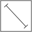

COME SONO CALCOLATI I MACRO-INDICATORI?
Ogni macro-indicatore è composto da micro-indicatori estratti database Istat e da altri database pubblici.
Ogni micro-indicatore ha un valore e una polarità:
IL COEFFICENTE

Il coefficente è rappresentato dalla dimensione del rettangolo
la polarità
valenza positiva
valenza negativa
I micro INDICATORI
La piattaforma permette di esplorare la struttura dei micro indicatori
I micro INDICATORI
Per ogni micro indicatore è possibile esplorare il dettaglio e l'impatto del suo coefficente sul totale del macro-indicatore